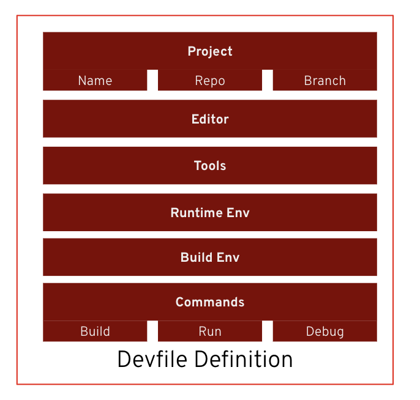

What is a Devfile?
In the previous lesson, you learned how OpenShift Dev Spaces provisions developer workspaces automatically.
But how does Dev Spaces know which tools, runtimes, and commands should be available inside each workspace?
The answer is a Devfile.

What is a Devfile?
A Devfile is a YAML file, typically named devfile.yaml, stored in the root of a Git repository.
Platform Engineers use Devfiles to describe and standardize development environments, allowing every developer working on a project to use the same tools, runtime, and workspace configuration.
Instead of manually configuring development environments, Dev Spaces simply reads the Devfile and provisions the workspace automatically.
|
A Devfile acts as the blueprint for a development workspace. It defines everything needed to create a consistent development environment. |
What Does a Devfile Define?
A Devfile can describe every aspect of a development workspace, including:
-
Project metadata such as the repository and default branch
-
The development editor and IDE configuration
-
Container images and runtime environment
-
Development tools and dependencies
-
Build and runtime environments
-
Volumes and persistent storage
-
Build, run, debug, and test commands
Because the Devfile is version-controlled alongside the application source code, every developer receives the same development environment regardless of their local machine.
Why Devfiles Matter
Without Devfiles, every developer must configure their own workstation.
This often leads to inconsistent tool versions, missing dependencies, and the classic problem:
"It works on my machine."
Devfiles eliminate this by defining the workspace as code.
Benefits include:
-
Consistent development environments
-
Faster developer onboarding
-
Reproducible workspaces
-
Version-controlled environment definitions
-
Simplified collaboration across teams
Devfile Structure
A Devfile is written in YAML and is organized into several logical sections.
schemaVersion: 2.2.0
metadata:
name: my-project
attributes: {} # IDE settings
components: [] # Containers, volumes, endpoints
commands: [] # Build, run, debug commands
events: {} # Lifecycle hooksThe most common sections are:
| Section | Purpose |
|---|---|
Metadata |
Identifies the workspace and project. |
Attributes |
Stores IDE-specific configuration, such as recommended extensions. |
Components |
Defines containers, volumes, endpoints, and other workspace resources. |
Commands |
Specifies build, run, test, and debug commands available from the IDE. |
Events |
Executes lifecycle actions such as |
Devfiles and the Universal Developer Image
A Devfile is recommended, but it is not required to create a workspace.
If a Git repository does not contain a devfile.yaml, OpenShift Dev Spaces automatically provisions a workspace using the Universal Developer Image (UDI).
The Universal Developer Image includes many commonly used development tools and programming language runtimes, allowing developers to start coding immediately.
As projects become more specialized, teams typically provide their own Devfile to customize the workspace with project-specific tools, dependencies, and commands.
How Devfiles Fit the Software Factory
Within the Software Factory, Platform Engineers maintain Devfiles as reusable definitions for development environments.
Developers simply clone a repository or create a new workspace, and Dev Spaces provisions the environment automatically.
This ensures every project follows organizational standards while reducing setup time and operational overhead.
|
Devfiles define development environments as code, allowing organizations to deliver standardized, repeatable, and version-controlled workspaces across teams. |
A Devfile is the blueprint for a Dev Spaces workspace. It defines the tools, containers, commands, and runtime configuration required for development, enabling consistent and reproducible environments for every developer.